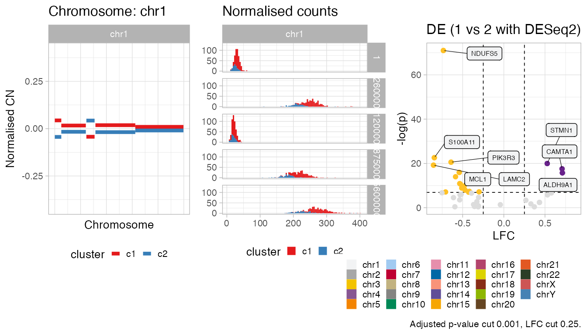
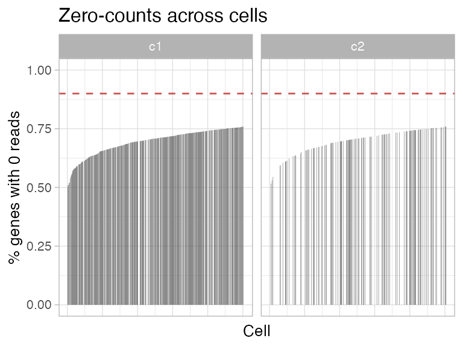

require(Rcongas)We show how you can plot information from a CONGAS object. We work with an example object released with the tool.
data('congas_example', package = 'Rcongas')
print(congas_example)
#> ── [ Rcongas ] ────────────────────────────────────────────────────────────────
#> → Data: 503 cells with 8564 genes, aggregated in 70 segments.
#> ℹ Clusters: k = 2, model with AIC = 577427.35.
#> ● Cluster c1, n = 379 [75.35% of total cells].
#> ● Cluster c2, n = 124 [24.65% of total cells].
#>
#> ── CNA highlights (alpha = 0.05)
#> ✓ c1 CNA(s): [chr14:93300001:105450000] vs c2, [chr15:67050001:102600000] vs c2, [chr16:1:3750000] vs c2, and [chr18:32400001:55950000] vs c2
#>
#> ── Differential Expression DESeq2 (1 vs 2)
#> ✓ 212 DE genes (alpha = 0.01, |lfc| > 0.25).Genome-wide clone profiles
Function plot_gw_cna_profiles allows to plot genome-wide
clone-specific CN profiles inferred by CONGAS.
Since segments are independent in the underlying statistical model and modelled by using lognormal distributions, each segment is scaled to reflect the offset to the mean estimated from all che model clusters. This type of measurement is called Normalised Copy Number.
Note that this is the only way of making sense in the comparison among the CN values obtained for different segments. It is not trivial to determine how different two segmetns should be to reflect an overall change in ploidy in the clone; nonetheless, this kind of scaling allows to detect which segments show the largest CN difference among the identified clones.
The default view splits works by facetting the chromosomes. The gray bar in eah chromosome represents the centromeres start/ end, determined from the used reference genome.
# Default, with facets
plot_gw_cna_profiles(congas_example)An alternative view is available to pool all the chromosomes together
# A whole-genome view
plot_gw_cna_profiles(congas_example, whole_genome = TRUE)It is possible to zoom in chromosomes with this plot (the dark gray bar is the centromere).
# A whole-genome view for chromosome 4
plot_gw_cna_profiles(congas_example, whole_genome = TRUE, chromosomes = 'chr4')Chromosomes highlight
The criterion to highlight a CNA in a fit is determined from this
distribution with a parameter alpha that sets the vertical
dashed line (is a quantile).
This is a heuristic.
# Default
plot_highlights(congas_example)
# More stringent
plot_highlights(congas_example, alpha = 0.001)
Plotting specific chromosomes
You can plot a chromosome by specifying its id. The height of the plot should be adjusted depending on the number of segments in the chromosome. If DE analysis is available (see below), a chromosome specific volcano plot is added
# Plot chromosome 1 (labeled "chr1")
plot_chromosome(congas_example, chr = 'chr1')
# Plot chromosome 15 (labeled "chr15")
plot_chromosome(congas_example, chr = 'chr15')Plotting input segments data
You can visualise the actual input data used by CONGAS, using
function plot_counts_rna_segments: these are the counts per
segments, after genes have been mapped and filtered as explained in
XXXX.
The function plots a heatmap-style view of the data, with associated the clustering assignments of each cell (rows). In order to plot these data you need to retr
# Use z-score, using counts normalisation
plot_counts_rna_segments(congas_example, z_score = TRUE)
# Without counts normalisation and without z-score.
plot_counts_rna_segments(congas_example, normalised = FALSE)Plotting input raw data
Raw data in input to CONGAS are counts of transcripts per cell. This matrix can be extremely large, and it should be plotted only on a subset of the data in many cases.
This function takes as input a list of genes to subset the plot.
Also, by default prompts the user to assess if he/she really wants to
plot the data; this helps because sometimes if the input data are too
large, the plot becomes useless (and can freeze the computation). If you
seek to skip the prompr you should set prompt = FALSE.
The plot can be generated with, and without clustering assignments.
# Raw input counts. Since we have them stored in "congas_example",
# we can access them straight from the object
raw_input = get_input_raw_data(congas_example, transpose = T)
# Used genes - just the a random set of 30. Wem use the "get_mapped_genes"
# function to get the ones actually used in "congas_example"
random_30_genes = get_mapped_genes(congas_example) %>%
dplyr::sample_n(30) %>%
dplyr::pull(gene)
# Plot
plot_raw_data(
x = raw_input,
lognormalise = T,
genes = random_30_genes,
prompt = FALSE)
# Plot with clusters
plot_raw_data(
x = raw_input,
genes = random_30_genes,lognormalise = T,
clusters = get_clusters(congas_example),
prompt = FALSE)
# Now we use the DE genes (see below)
plot_raw_data(
x = raw_input,
genes = get_DE_table( # DE genes selected
congas_example,
cut_pvalue = 0.001,
cut_lfc = .75) %>%
dplyr::pull(gene),
clusters = get_clusters(congas_example),
lognormalise = T,
prompt = FALSE
)Plotting DE analysis
The most common plot that we implemented for a Differential Expression analysis is a volcano plot, reporting on the x-axis the LFC (log-fold change), and on the y-axis the test p-value (adjusted).
The function has two cutoffs options to highlight significantly DEGs
(Differentially Expressed Genes), and annotate the top ones (both
Upregulated, with LFC > 0, and Downregulated, with
LFC < 0).
A gene is deemed non-significant ns based on a joint
condition that involved LFC and the p-value.
# Default plot
plot_DE_volcano(congas_example)
# Setting the cut on LFC to 0
plot_DE_volcano(congas_example, cut_pvalue = 0.05, cut_lfc = 0)
# Requiring lower p-value, decreasing LFC, and annotating top 10 genes
plot_DE_volcano(
congas_example,
annotate_top = 10,
cut_pvalue = 1e-6,
cut_lfc = 0.15
)It is possible to integrate the whole-genome view of the copy number segments, together with the results from a DE analysis.
The combined plot shows, on top of the segments, the total number of deferentially expressed genes (DEGs) that map to the segments as well as their relative frequency with respect to genes that map to the segments, and that have beend tested for DE status. On top, the plot reports also a line plot showing where other DEGs have been found, which however map off the CNA segments used by CONGAS.
# Default plot
plot_DE_gw(congas_example)
#> Warning: `guides(<scale> = FALSE)` is deprecated. Please use `guides(<scale> =
#> "none")` instead.
#> Warning: Removed 16 rows containing missing values (geom_rect).
#> Removed 16 rows containing missing values (geom_rect).
#> Warning: Removed 16 rows containing missing values (geom_point).The counts distribution per segment, with annotated quantiles.
plot_counts_per_segment(congas_example)
The cohort statistics (three plots):
- percentage of 0s in cell counts (to find cells with little count information)
- counts distribution across all cohort (to find outliers in count data)
- percentage of 0s in gene counts (to find genes expressed in a little portion of the population)
# Returns a number of plots with different statistics
plot_cohort_statistics(congas_example, assembly = FALSE)
#> $zeroes
#>
#> $counts#>
#> $genesAnalysis report(s)
A full report assembles some of these visualisations.
This is a standard analysis report.
report_analysis(congas_example)
#> ✓ Loading ctree, 'Clone trees in cancer'. Support : <https://caravagn.github.io/ctree/>
#> Warning: replacing previous import 'Biostrings::translate' by
#> 'seqinr::translate' when loading 'dndscv'
#> ✔ Loading mobster, 'Model-based clustering in cancer'. Support :
#> <https://caravagn.github.io/mobster/>.
#> Warning: `guides(<scale> = FALSE)` is deprecated. Please use `guides(<scale> =
#> "none")` instead.
#> Warning: `guides(<scale> = FALSE)` is deprecated. Please use `guides(<scale> = "none")` instead.
#> `guides(<scale> = FALSE)` is deprecated. Please use `guides(<scale> = "none")` instead.
#> `guides(<scale> = FALSE)` is deprecated. Please use `guides(<scale> = "none")` instead.This is to focus on Differential Expressions.
report_analysis_de(congas_example)
#> Warning: `guides(<scale> = FALSE)` is deprecated. Please use `guides(<scale> =
#> "none")` instead.
#> Warning: Removed 16 rows containing missing values (geom_rect).
#> Removed 16 rows containing missing values (geom_rect).
#> Warning: Removed 16 rows containing missing values (geom_point).